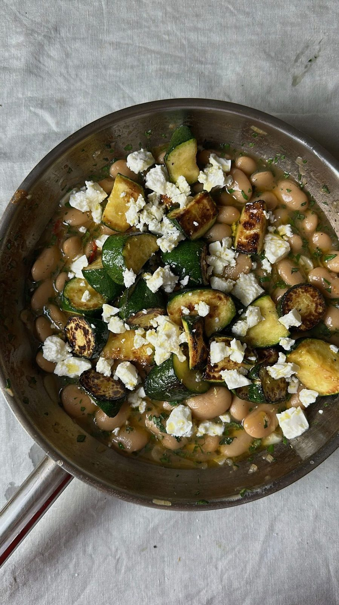

Herby Courgette + Butter Beans
A one-pan supper of golden fried courgettes piled onto creamy butter beans,

Ingredients
Method
- Slice the 2 large courgettes into rounds.
- Fry them in olive oil until golden on each side, in batches so every round
- Remove the courgettes and set aside on kitchen paper to soak up the excess oil.
- Fry the 1 diced shallot in the same pan, adding another splash of olive oil
- Add the 1 sliced red chilli and 4 sliced garlic cloves and fry for another
- Tip in the 1 x 700g jar of butter beans along with their liquid, then the
- Bring to the boil, then reduce to a simmer for 5 - 10 minutes until thick.
- Beat in the juice of the 1 lemon with the 1 tbsp basil and 1 tbsp mint,
- Serve the courgettes on top, scattered with the lemon zest, the
Notes
The source gives neither a yield nor timings — the time here is estimated from the method.